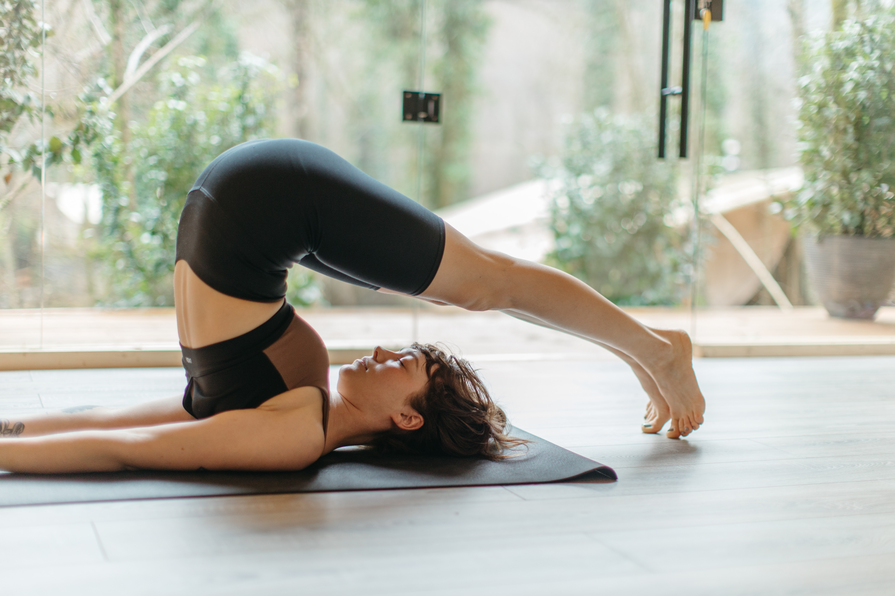

Your Personalised Music Bank
Personalizza la tua musica in base ai BPM
Scegli la canzone più adatta all'attività che stai svolgendo in base ai BPM
Running

È stato dimostrato che chi ascolta musica mentre si allena ha bisogno del 7% in meno di ossigeno rispetto a chi non ascolta brani musicali. Accompagna la tua corsa con questa playlist energetica.
150 bpm160 bpm
170 bpm
Meditazione
Chiudi gli occhi e fai un respiro profondo. Lascia che il tuo cuore e il tuo respiro si uniformino al ritmo di queste melodie rilassanti.
40-50 bpmCucina
Sia che prepari un pranzo veloce sia che cucini un piatto ricercato, crea l'atmosfera perfetta con queste canzoni che ben si accordano coi rumori della cucina.
90 bpmSotto la doccia

L'acqua che scorre sul nostro corpo rilassa i muscoli, favorisce la circolazione e abbassa il grado di stress. Questa playlist è perfetta come sottofondo per una doccia rilassante.
70 bpmMomenti Romantici

Che sia il sottofondo per una cena a lume di candela, per una promessa d'amore o per la sorpresa di San Valentino, ogni momento condiviso con il proprio èartner deve avere la giusta colonna sonora!
80 bpmBodybuilding

Ascolta questa playlist durante il tuo allenamento. Sarai pieno di energia e percepirai meno la fatica e gli sforzi muscolari. Manterrai un ritmo cardiaco più costante ed anche i tuoi movimenti tenderanno a seguire il ritmo della musica.
150 bpmYoga
Lo yoga insegna ad ascoltare il proprio corpo. La musica può essere un valido alleato in questo percorso di consapevolezza. Ascolta musica per imparare ad ascoltarti.
70 bpmJogging
Infila le scarpe da ginnastica e gli auricolari. Ti renderai conto di quanto è naturale per il nostro cuore e per le nostre gambe sincronizzarsi col ritmo della canzone.
120 bpmPilates e Fitness
La musica non è solo una colonna sonora dell'allenamento. La giusta playlist aumenta la motivazione e migliora le prestazioni. Meglio ancora se compi il movimento a ritmo di musica.
100-120 bpm130 bpm
140 bpm
Pittura e creatività
La musica ha un effetto positivo sul cuore e, di conseguenza, anche sulla mente. 60-75 bpm è la frequenza ideale per stimolare la fantasia, la creatività e la libera espressività artistica.
60-75 bpmPomeriggio di Studio

Accompagna i tuoi pomeriggi di studio con canzoni che abbiano 60-75 bpm. Quando il cuore batte seguendo questo ritmo, la concentrazione e l'attenzione sono maggiori. Ne consegue un miglioramento dell'apprendimento e delle capacità creative.
60-75 bpmScopri quanti bpm ha la tua canzone preferita!
BPM finderPuoi caricare i tuoi file audio e scoprire quanti bpm ha la tua canzone preferita.
Si tratta di uno strumento perfetto per creare playlist innovative o remix divertenti.
Fondamenti scientifici

Ecco alcune ricerche scientifiche che dimostrano l'influenza del tempo musicale sulla frequenza cardiaca.
La musica come terapia per curare l'ipertensione, studio condotto da un team di ricercatori della Facoltà dell'università Juazeiro del nord (Brasile), della Facoltà di Medicina di ABC (Brasile) e della Oxford Brookes University (UK).
I benefici dell'ascolto della musica durante lo sport, studio condotto dai ricercatori della Brunel University di Londra
Il progetto!